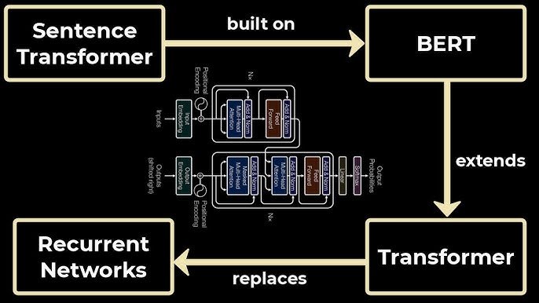
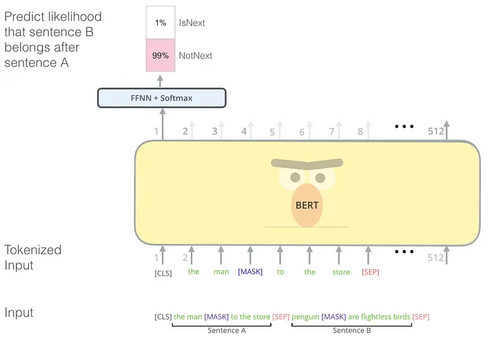
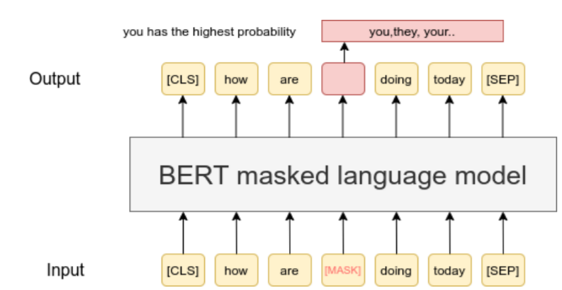
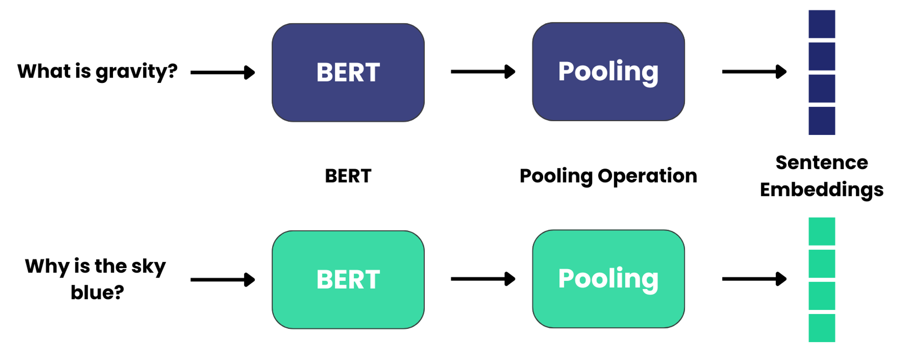

In the previous article, we explored the master chef analogy for foundation models. We also discussed how transformers serve as the basic architecture for large language models. Depending on which part of the transformer model is used — encoder or decoder— we have two types of LLMs: representation models, which represent words as numbers, and generative models, which generate text.

In this article we will go through these topics in simpler language:
- What are Reprensentation Models?
- What is BERT ?
- What is Sentence Transformers?
What are Representation Models?
Imagine stepping into a vast library where every book is catalogued not just by its title but by the essence of its content. Representation models work in a similar way. They convert text—be it a word, a sentence, or a whole document—into a series of numbers, often referred to as vectors. These vectors serve as unique fingerprints, capturing the context, sentiment, and meaning embedded within the text.
By transforming text into these numerical fingerprints, representation models empower machines to perform tasks like text classification, sentiment analysis, and topic detection without needing to understand language in the traditional sense. In short, they provide a foundational layer that bridges raw text and actionable insights.
What is BERT?
BERT, which stands for Bidirectional Encoder Representations from Transformers, is one of the most influential models in NLP. Developed by Google, BERT revolutionized language understanding by taking context into account from both directions—left and right of each word.

Here’s what makes BERT stand out:
- Bidirectional Context: Unlike earlier models that read text in a single direction, BERT examines the entire sentence simultaneously, ensuring a richer and more nuanced understanding of word meanings.
- Massive Pre-training: BERT is trained on extensive datasets using innovative tasks like Masked Language Modeling (MLM) and Next Sentence Prediction (NSP), which allow it to learn intricate language patterns.
- Versatility: From text classification and sentiment analysis to question answering, BERT’s robust representations make it adaptable to a wide range of NLP tasks.

Think of BERT as a master chef who not only knows every ingredient (word) in a recipe (sentence) but also understands how they all interact to create the perfect flavor (meaning).
What is Sentence Transformers?
While BERT provides deep contextual understanding at the word and sentence level, Sentence Transformers are tailored to generate fixed-size embeddings for entire sentences. These embeddings make it easier to compare, cluster, and classify text based on semantic similarity.

Key aspects of Sentence Transformers include:
- Pre-Training: Sentence Transformers are also called as SBERT is fine-tuned on sentence pairs using siamese architecture as show in above image.
- Efficient Semantic Comparison: By mapping sentences to a common vector space, these models enable quick and accurate comparisons—essential for tasks like semantic search and clustering.
- Enhanced Text Classification: Converting sentences into embeddings simplifies the process of sorting texts into categories, as similar sentences will have similar vector representations.
- Real-World Applications: From grouping similar customer reviews to organizing news articles, Sentence Transformers provide a robust framework for handling diverse text classification challenges.
Imagine Sentence Transformers as a refined culinary tool that not only identifies each ingredient but also captures the overall recipe. Ideally, Sentence Transformers create better embeddings since it captures the context of overall recipe rather than at ingredient levels.
Conclusion
Representation models are the unsung heroes behind many NLP applications, transforming raw text into meaningful data that machines can understand. BERT and Sentence Transformers exemplify how far we’ve come—each offering unique advantages in capturing the subtle nuances of language. Whether it’s for text classification or broader language understanding tasks, these models continue to push the boundaries of what’s possible in AI.